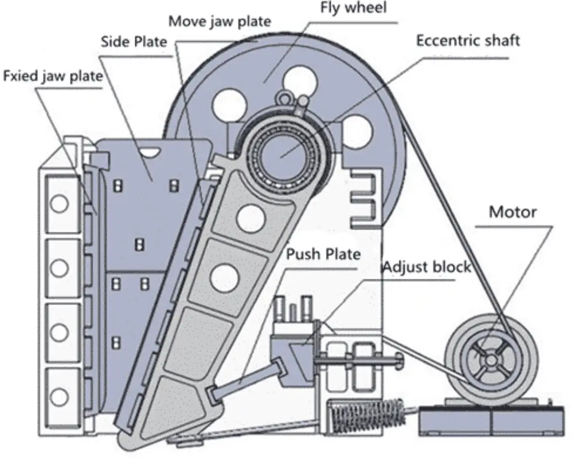
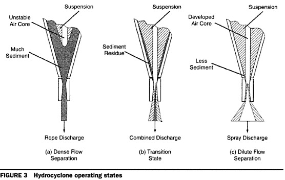
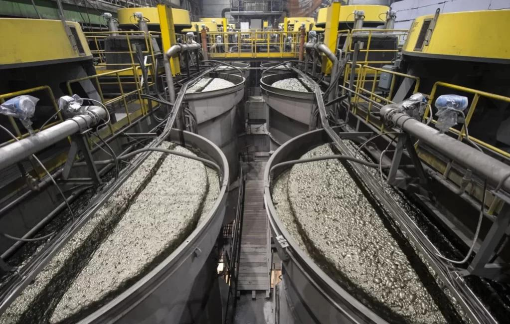

Crushing
Large rocks extracted from the mine are reduced in size using jaw crushers, gyratory crushers and cone crushers.
Discover how raw ore is transformed into valuable mineral concentrates through modern mineral processing operations.

Large rocks extracted from the mine are reduced in size using jaw crushers, gyratory crushers and cone crushers.

SAG mills and ball mills grind the ore into fine particles.

Hydrocyclones classify particles according to size.

Valuable minerals are separated from waste rock.

Water is recovered and solids are concentrated.

Additional moisture is removed from the concentrate.
Mine → Crushing → Grinding → Classification → Flotation → Thickening → Filtration → Final Concentrate

This diagram illustrates the complete route followed by ore, from extraction at the mine through the concentration plant.